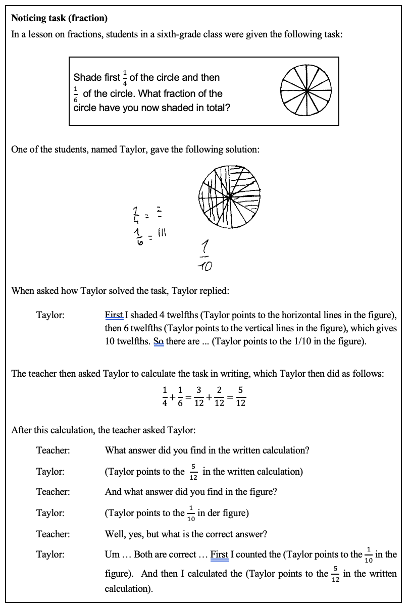

Welcome to the Taylor task
In this activity, you will interact with Taylor, a simulated student who has solved the fraction problem you looked at in the previous session. Your task in this conversation is to design questions and representations/tools (e.g., fraction bars, number line) to uncover Taylor’s underlying thinking and look for ideas that make sense in Taylor’s reasoning. You have about 5–8 messages to Taylor. Use them thoughtfully.
Noticing task (fraction)
Please review the task and Taylor’s work below before starting.
